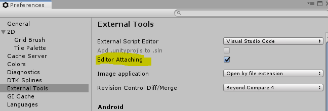

0x01 问题描述:
- VSCode中安装了 Debugger for Unity 插件
- 设置断点，启动 Debug
- Debugger 先显示 Attached Unity Editor, 但是一会自己断开连接显示 Disconnected
Log 如下：
1 | UnityDebug: Initializing |
Github 有专门的issue讨论：
Unable to keep debugger attached #103
如文中所说，很多人都以为连接中断是 vscode-unity-debug 的Bug，但实际上只是 UnityEditor 里面的设置选项导致
0x02 解决办法：
- 进入 Unity 属性设置面板:
依次打开 Unity -> Edit -> Preferences -> External Tools
勾选 Editor Attaching
